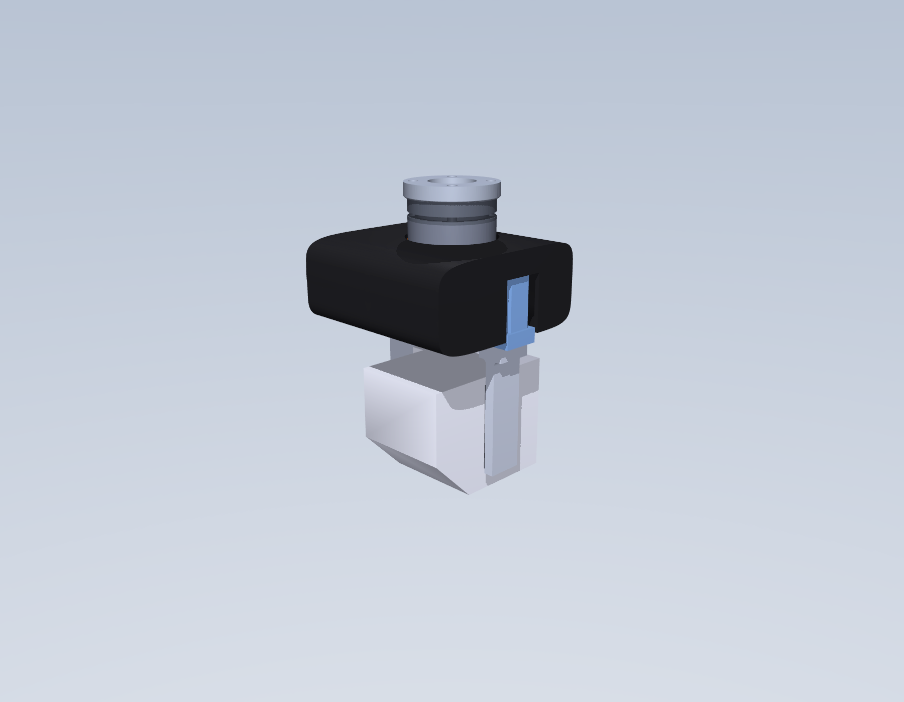
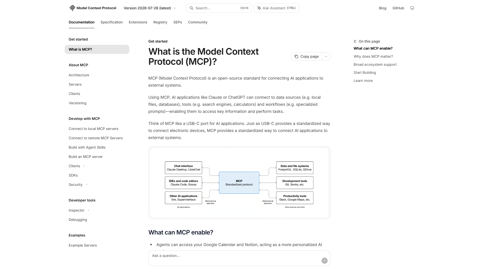
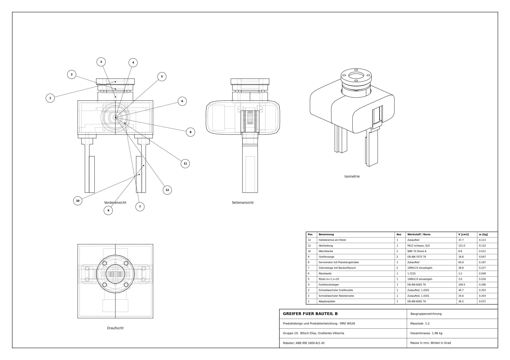
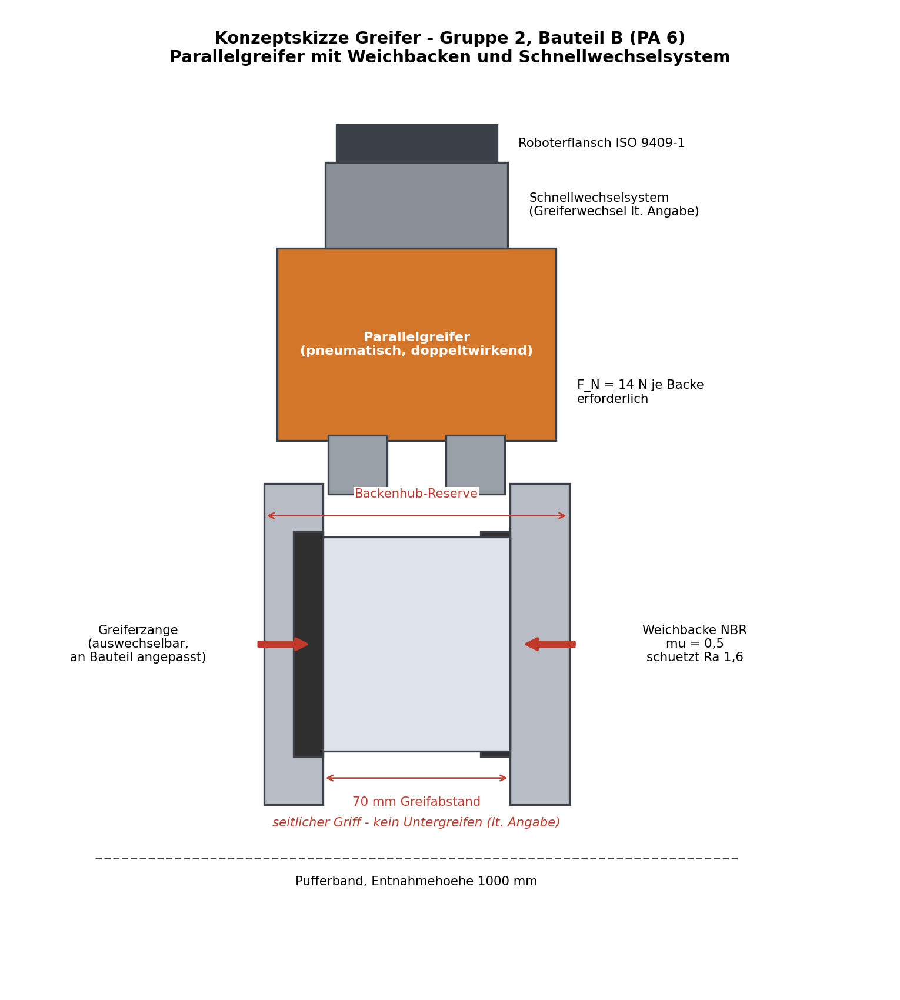

Produktdesign und Produktentwicklung · MRE WS 26/27
Robotergreifer, Bauteil B
Der Projektplan. Vorschlag, kein Beschluss.
Elias · BB-1
Viktoriia · BB-2
Gruppe 10
Zwei Termine sind hart
Zwischenbericht
26.11.26
Donnerstag, 17:50, Präsenz. BB-1-Termin.
Endkontrolle
15.01.27
Freitag, 16:10, Präsenz. Abgabe im Moodle.
Wir sind in getrennten LV-Gruppen. Wenn wir beide nach BB-1 fahren, sind wir je eine Woche früher dran als BB-2 — das kostet Puffer und muss mit Saliger abgeklärt werden.
100 Punkte — und sie sind nicht gleich verteilt
Die Konstruktion zählt doppelt. Sie bekommt die meiste Zeit — und wir machen sie zu zweit.
Vorschlag: zwei Hälften, die je für sich Sinn ergeben
Elias
System & Integration
E1Roboterauswahl + Aufstellung10 P
E2Grundkörper, Antrieb, Schnellwechsler20 P*
E3Baugruppenzeichnung + Stückliste10 P
E4MuJoCo-Ablauf + Kollisionskontrolle10 P
E5Repo, Onshape, Automatisierung—
Viktoriia
Auslegung & Nachweis
V1Greifkonzept + Konzeptskizze10 P
V2Greifkraft + Antriebsauslegung10 P
V3Greiferzange + Weichbacken (CAD)20 P*
V4Analytisch + FEM + Vergleich20 P
V5FDM-Druck: Zange messen, FEM prüfenBonus
Du konstruierst genau das Teil, das du danach rechnest, prüfst und druckst. Unsere einzige Schnittstelle ist eine Fläche — die Anschraubebene Schlitten ↔ Zange.
Der Weg dahin
September bis Januar
M0 · Kickoff
14.09 – 20.09
M1 · Konzept, Design Freeze
21.09 – 04.10
M2 · CAD schließt
05.10 – 01.11
M3 · Analytisch + FEM
02.11 – 22.11
M4 · Zeichnung, Sim, Druck
23.11 – 20.12
Weihnachtspause
21.12 – 03.01
M5 · Zusammenführen
04.01 – 11.01
SEP
OKT
NOV
DEZ
JAN
Zwischenbericht 26.11.
Endkontrolle 15.01.
Die FEM liegt vor dem Zwischenbericht, nicht danach. Und die Zeichnung im Dezember, nicht im Januar — beides steht wörtlich in Saligers Liste „damit euer Projekt nicht scheitert“.
Und das Werkzeug, das dahinter läuft

Claude Code
im Terminal, mit Repo-Zugriff
→
MCP
Model Context Protocol
→

→
parametrisches CAD
Maß ändern, Kette rechnet neu

Onshapebewirbt FeatureScript MCP selbst auf der Startseite — das ist kein Bastelweg

MCPoffener Standard, verbindet Claude mit CAD, Dateien und Tools

MuJoCoAblauf und Kollision, mit echten Kontaktkräften statt Behauptung




Das ist kein Plan auf Papier: die Kette läuft schon. FEM, Ablaufsimulation, Zeichnung und Skizze sind aus unserem Testlauf — wir bauen sie jetzt sauber neu.
Sag mir, was du anders willst.
Die Pakete sind absichtlich tauschbar geschnitten. Wenn du lieber die Simulation machst statt der FEM, oder lieber in Fusion arbeitest als in Onshape — sag es jetzt, nicht im Dezember.
 github.com/eliasbitsch/PDE-Robotergreifer
github.com/eliasbitsch/PDE-Robotergreifer
Aufteilung ok?
Onshape oder was anderes?
Timeline zu eng?
FEM: Skript oder GUI?